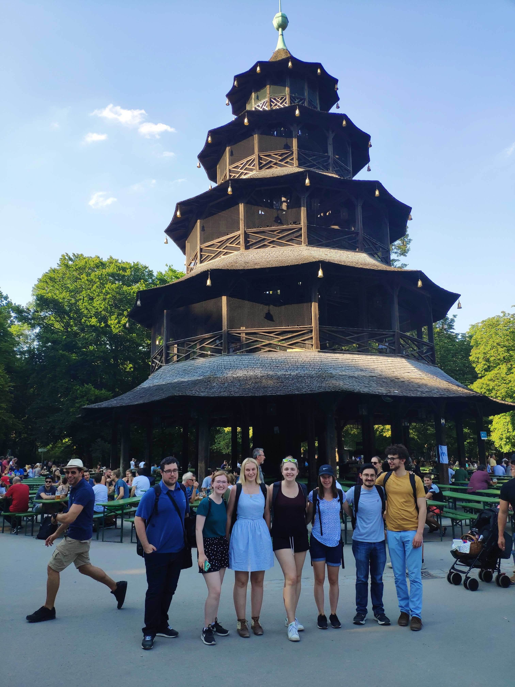

I'm an aspiring software engineer based in Washington, D.C. I'm currently studying at Bryn Mawr College and am graduating in May 2020 with a B.A. in Computer Science and German.
I have the most experience in backend languages like Java and Python but I have also worked in Web Development, Machine Learning, Virtual Reality and Human-Computer Interaction.
I’ve held software engineering internships at Fidelity Investments and Accolade and most recently I was an IRES Summer Research Fellow doing Human-Computer Interaction research in Munich, Germany.
The IRES interns and I at the English Gardens in Munich, Germany.
I was drawn to computer science because of its flexibility and its ability to be applied to any industry or subject. I have many interdisciplinary interests such as language learning and playing classical music, so I love that I can use my tech skills to create projects in those areas and beyond.
My biggest accomplishment in college is founding and organizing SisterHacks, the first Seven Sisters Colleges hackathon. Throughout the process of organizing SisterHacks, I have managed a $12,000 budget, lead a remote team of twelve and cold-emailed over 300 companies to bring to Bryn Mawr College for SisterHacks. Over the past two years, SisterHacks has helped over seventy students learn about technology, build bonds across the Seven Sisters Colleges, and network with alumnae and company representatives.
My biggest strength as a software engineer is my ability and willingness to learn a new language or framework to get a project done. I have dabbled in many languages and areas of computer science throughout college so I’m not afraid to jump into something I don’t have experience in because I am confident in my ability to learn anything. For example, I recently taught myself Flask to create a website to help high-risk individuals in my neighborhood during the COVID-19 pandemic, which you can learn more about here.
I am also a strong communicator. I double majored in Computer Science and German Language and I am now fluent in German. Attending a liberal arts college helped me strength my writing and communication skills tremendously, in both English and German. I have worked as a Teaching Assistant for both German and Computer Science classes for three years. I have also run a violin and viola teaching service on the side for the past six years. I have learned from my years of teaching how to break up information into understandable chunks and explain it to those who may not have any knowledge in the subject. I have taught people ages five to twenty-two so I also know how to adjust how I explain things depending upon my audience.